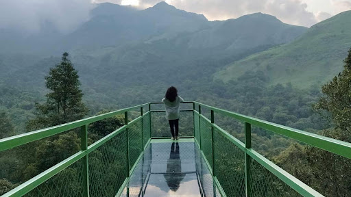
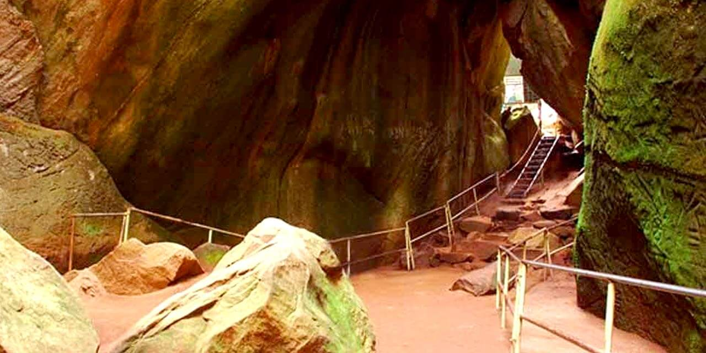
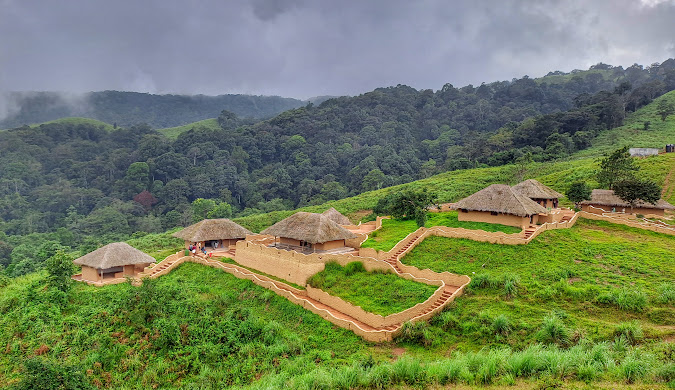
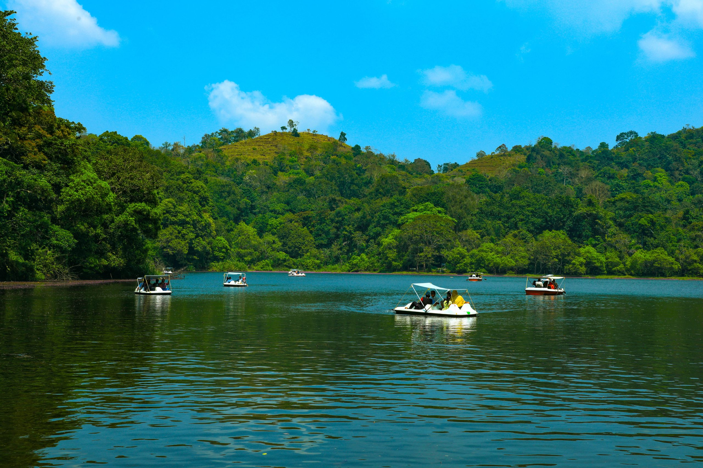
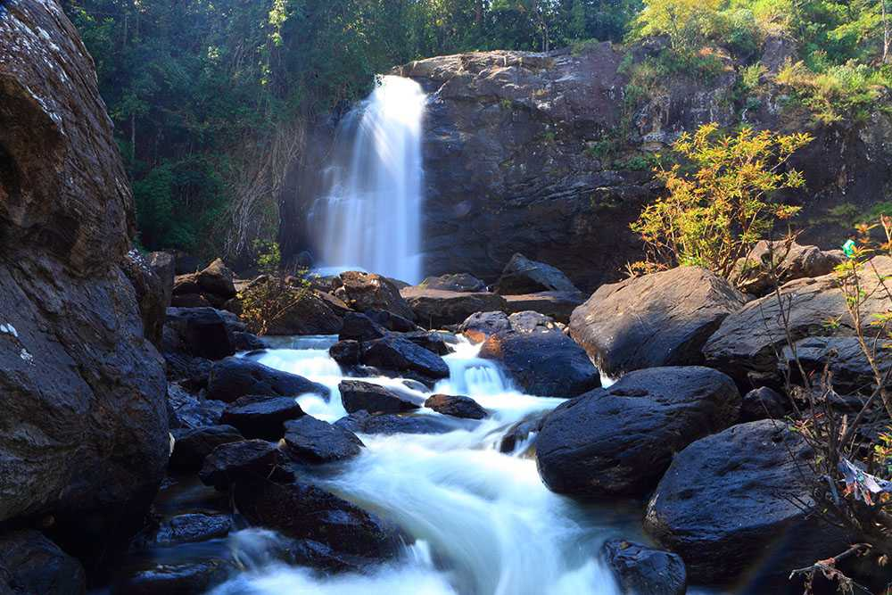
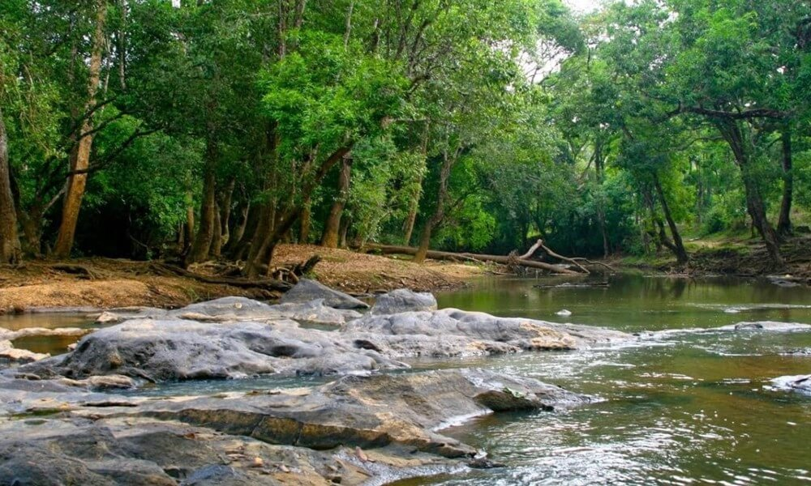
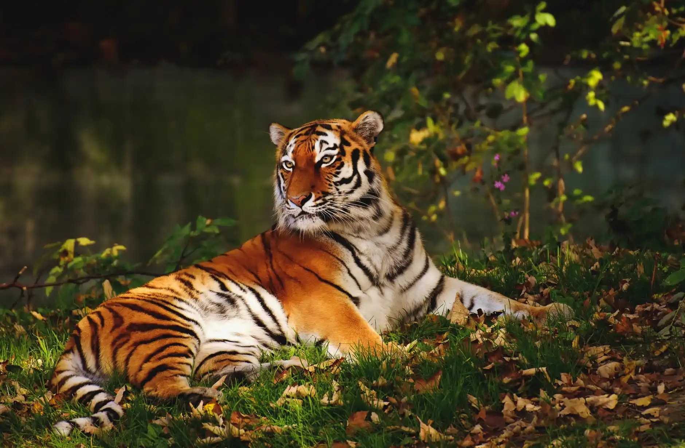

Must Visit Places

Glass Bridge
This is Kerala's first glass bridge and a popular destination for adventure and nature lovers. The bridge provides breathtaking views of the lush Western Ghats and dense forests below.
Timings: 9:00 AM to 6:00 PM
Best Time to Visit: October to February
Things to Do: Walk on the glass bridge, enjoy scenic views, take photographs, and hike around the area.
Attractions Nearby: Soochipara Waterfalls, Edakkal Caves,Banasura Sagar Dam.
How to Reach: Located near Meppadi, the glass bridge can be reached by road. Meppadi is about 30 km from Kalpetta. The nearest railway station and airport are in Kozhikode.

Edakkal Caves
Step into a time warp as you experience the mystical energy of these caves, rendering these caves as one of the popular places to visit in Kerala. The 6000 B.C old pictorial depictions from the Neolithic age shroud this place in an aura of mystery and add an archaeological significance to this attraction. However, trekking via the Ambukutty Mala is required for you to reach this place. The name of this cave, Edakkal means “a stone in between” and that is exactly how this cave is structured, with one smaller stone wedged between two huge stones. As you venture inside these caves, you’ll be awestruck by their imposing height and structure, located at an altitude of around 1200 m above sea level. It’s the perfect place for history buffs and those interested in uncovering mysteries.
Best time to visit Edakkal Caves, Wayanad: November to March.
Edakkal Caves timings: 8 A.M to 4 P.M
Attractions near Edakkal Caves, Kerala: Waterfalls, Kanthanpara Waterfalls, Cheengery Hills, Wayanad Wildlife Sanctuary.
Things to do near Edakkal Caves: Trekking.
How to reach Edakkal Caves, Wayanad: You must travel via a taxi or bus from Kalpetta to reach this cave.

En Ooru
This project, initiated by the Kerala government, is designed to celebrate and preserve the culture and lifestyle of the tribal communities in Kerala. It showcases traditional tribal architecture, art, and heritage, offering a glimpse into the lives of the indigenous communities.
En Ooru Timings: from 9:00 AM to 5:00 PM
Best Time to Visit: October to May
Things to Do: Explore the heritage village, experience tribal art and crafts, taste traditional food, and enjoy cultural performances.
Attractions Nearby:Pookode Lake, Lakkidi Viewpoint, Chembra Peak.
How to Reach: En Ooru is accessible by road from nearby towns like Kalpetta and Vythiri. The nearest railway station is in Kozhikode, and the nearest airport is Calicut International Airport.

Pookode Lake
Nestled amidst the verdant landscapes of Wayanad in Kerala, India, Pookode Lake is a calm haven that entices visitors with its gorgeous surroundings and serene beauty and one of the best places to visit in Wayanad. Undertake a leisurely boat ride across Pookode Lake's serene waters is one of the joys of a visit there. Visitors can rent rowboats and pedal boats and explore the lake at their own leisure while admiring the stunning surroundings. Nature enthusiasts and adventure lovers can take short walks around the lake, traversing the picturesque walking trails, which provide views of the local wildlife and flowers. The lake and the trees around it are home to a wide range of bird species, making it an ideal spot for the bird watchers.
Best time to visit Pookode Lake:December & May.
Pookode Lake timings: 9 a.m. to 5 p.m.
Attractions near Pookode Lake: Chain Tree, Glass Bride 900 Kandi Wayanad, En Ooru, Kurumbalakotta
Things to do in Pookode Lake: Nature Walks, Boating, check out the Aquarium, relaxing in fish spa, Buying souvenirs
How to reach Pookode Lake: You can reach Pookode Lake via cab or taxi.

Soochipara Waterfalls
Here's another suggestion for those wondering where to go in Wayanad. This three-tiered waterfall is a sight to behold with its gorgeous cascading water passing through the undulated path full of rocks and rough surfaces. Also known as Sentinel Rock Waterfall, the water falls from an altitude of around 200 m and is engulfed by deciduous, evergreen, and montane forests that accentuate its beauty even more. The tranquility you’ll experience here is truly awe-inspiring and would make you want to stay here indefinitely. You can indulge in various adventure activities at this place because the terrain here offers great opportunities to adventure enthusiasts.
Best time to visit Soochipara Falls: June to September or October to November
Soochipara Falls timings: 9 A.M to 5 P.M
Attractions near Soochipara Falls: Kanthanpara Falls, Sunrise Valley Viewpoint, 900 KANDI, Chembra Peak
Things to do in Soochipara Falls: Swimming, rock climbing, trekking, rappelling, hiking
How to reach Soochipara Falls: The best option would be to hire a cab to the entry point of the waterfall or board a public bus to a stop near the waterfall. Public transport can't access the entry point of this place, so you'll have to hike the rest of the way, approx. 2 km.

Banasura Sagar Dam
The Wayanad itinerary is incomplete without adding this marvelous tourist place to it. Being the largest earthen dam in India and second largest in Asia, visiting this place is one of the best things to do in Wayanad with your loved ones to set your sights on such a beauty. It’s a picture-perfect place with milky white waterfalls, lush greenery, mist-covered hills, and scenic beauty ahead of you. There are several adventure activities that you can indulge in, such as boating, horse riding, and much more. Constructed as a means to provide irrigation water, electricity and drinking water to the people, this dam has turned into a major tourist hotspot.
Best time to visit Banasura Sagar Dam: September to March
Banasura Sagar Dam timings: 9 A.M to 5 P.M
Attractions near Banasura Sagar Dam: Pookode Lake, Banasura Hill, Karlad Lake, Lakkidi Viewpoint
Things to do in Banasura Sagar Dam: Boating, horse riding, camel riding, trekking
How to reach Banasura Sagar Dam: You can travel via taxi or cab from nearby cities to this dam.

Kuruva Island
A haven for nature lovers, couples, and families, this island is the epitome of serenity because of all the elements that make it what it is. The calmness of the Kabini River, the shelter of the trees, and the cozy vibe of the place makes it ideal for enjoying some leisure time. The soothing surroundings are enough to heal your soul and make you feel rejuvenated. Nature’s the best remedy for everything and makes for a great companion. This island is a group of islands that you can explore via boats or rafts and the dense forests here are home to several flora and fauna, acting as their guardian. So, spend some time amidst nature and watch a change in yourself.
Best time to visit Kuruva Island, Wayanad: October to March
Kuruva Dweep timings: 9:30 A.M to 3:30 P.M
Attractions near Kururva Island, Kerala: Lakkidi Viewpoint, Edakkal Caves, Soochipara Waterfalls, Chembra
Things to do in Kuruva Island: Boating, rafting, nature walk
How to reach Kururva Dweep: You can either board a bus from Manathavady or Pulpally to reach this island.

Wayanad Wildlife Santuary
As you explore the alluring attractions in this district, one place you can’t miss out on is Wayanad Wildlife Sanctuary. Taking a trip to this tourist attraction is among the best things to do in Kerala, so make the most of it. There are four ranges in this sanctuary, namely Sulthan Bathery, Muthanga, Kurichiat and Tholpetty. You’ll come across several animals, including Indian Bison, Elephants, Leopards, Deer, and other species that would keep you engaged for hours. In fact, this sanctuary even protects some of the endangered flora and fauna. Kerala’s bestowed with natural beauty and this wildlife sanctuary is the proof of that. What makes this place even more important is that it’s the part of Nilgiri Biosphere Reserve, which was the first biosphere in India.
Wayanad Wildlife Sanctuary timings: 7 A.M to 5
Attractions near Wayanad Wildlife Sanctuary, Kerala: Sree Thirunelli Mahavishnu Kshetram, Banasura Sagar Dam, Kuruva Dweep, Meenmutty Falls
Things to do in Wayanad Wildlife Sanctuary: Jungle safari, wildlife safari, nature walk, elephant ride, bird tour
How to reach Wayanad Wildlife Sanctuary: Buses or taxis are the convenient modes of transport to reach this sanctuary.